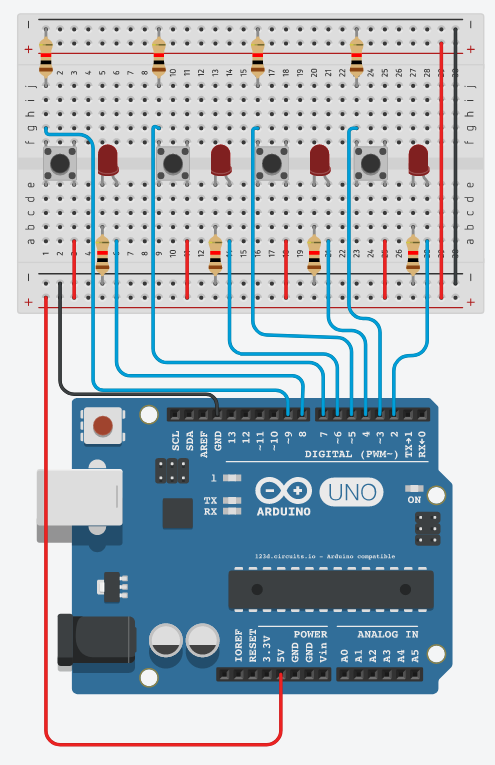

Arrays
Description:
When you press one of the 4 buttons, the corresponding LED should turn on. When you press the button again, the corresponding LED should turn off.
Important Notes:
- All pins used in this project are digital
Materials:
- 1x Arduino
- 1x Breadboard
- 16x male-to-male Jumper wires
- 8x 1k ohm resistors (colour code: brown, black, red)
- 4x Push buttons
- 4x LED
Instructions:
- Orient the breadboard so that the smallest column number is on the left, and the greatest is on the right
- Take a wire, connect one end of the wire to ground on the breadboard on one end and then connect the other end of the wire to ground on the opposite side of the breadboard
- Take a wire, connect one end of the wire to positive on the breadboard on one end and then connect the other end of the wire to positive on the opposite side of the breadboard
- Connect the 4 switches to the bridge of the board (S1: F1-E1/F3-E3, S2: F9-E9/F11-E11, S3: F16-E16/F18-E18. S4: F23-E23/F25-E25)
- Connect four 1k ohm resistors from ground to each push button (S1: GND-J1, S2: GND-J9, S3: GND-J16, S4: GND-J23)
- Take four wires and connect one end to Vcc and the other end to the push button (S1: Vcc-A3, S2: Vcc-A11, S3: Vcc-A18, S4: Vcc-A25)
- Take four LED’s and connect them in between the switches (LED1: Negative E5-Positive E6, LED2: Negative E13-Positive E14, LED3: Negative E20-Positive E21, LED4: Negative E27-Positive E28)
- Take four more 1k ohm resistors and connect them from ground to the negative side of each LED (LED1: GND-B5, LED2: GND-B13, LED3: GND-B20, LED4: GND-B27)
- Take a wire and connect one end to the 5V power (on the arduino) and the other end to Vcc
- Take a wire and connect one end to the GND on the digital side (of the arduino) and connect it to GND on the board
- Take four wires and connect one side to the positive side of each LED to the arduino digital side (LED1: A6-Dig8, LED2: A14-Dig6, LED3: A21-Dig4, LED4: A28-Dig2)
- Take another four wires and connect one side of the wire to one side of negative each switch to the arduino (S1: G1-Dig9, S2: G9-Dig7, S3: G16-Dig5, S4: G23-Dig3)
Schematic/Breadboard diagrams:
Demonstration:
Related: Arrays Software Tutorial